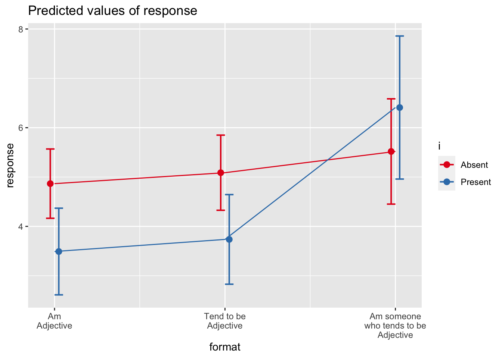

Does item format impact response?
Last updated 2021-08-19
The primary aims of this study are to evaluate the effects of item wording in online, self-report personality assessment. Specifically, we intend to consider the extent to which incremental wording changes may influence differences in the distributions of responses, response times, and psychometric properties of the items. These wording changes will include a progression from using (1) trait-descriptive adjectives by themselves, (2) with the linking verb “to be” (Am…), (3) with the additional verb “to tend” (Tend to be…), and (4) with the pronoun “someone” (Am someone who tends to be…).
Using a protocol that administers each adjective twice to the same participant (in different combinations of item format administered randomly across participants), we will use between-person analyses to compare responses using group-level data for the different formats.
These analyses will attempt to account for delayed_memory effects by collecting data on immediate and delayed recall (5 minutes and approximately two weeks) using a delayed_memory paradigm that was developed based on a similar recall task used in the HRS (Runge et al., 2015).
Effect of format (Block 1 data)
We used a multilevel model, nesting response within participant to account for dependence. Our primary predictor was format. Here, we use only Block 1 data; in other words, effects are largely between person, although each person contributes 31 unique data points to the analysis (one for each trait). We use the anova function to estimate the amount of variability in response due to format.
item_block1 = filter(items_df, block == "1")
mod.format_b1 = lmer(response~format + (1|proid),
data = item_block1)
anova(mod.format_b1)## Type III Analysis of Variance Table with Satterthwaite's method
## Sum Sq Mean Sq NumDF DenDF F value Pr(>F)
## format 1.3559 0.45198 3 31 0.3033 0.8228When examining only Block 1 data, item format was unassociated with participants’ responses to personality items \((F(3, 31.00) = 0.30, p = .823)\).
plot_b1 = plot_model(mod.format_b1, type = "pred")
plot_b1$format +
labs(x = NULL,
y = "Average response",
title = "Average responses by item formatting (Block 1 Data)") +
theme_pubclean()Predicted response on personality items by condition, using only Block 1 data.
means_by_group = item_block1 %>%
group_by(format) %>%
summarise(m = mean(response),
s = sd(response))
item_block1 %>%
ggplot(aes(x = response, fill = format)) +
geom_histogram(bins = 6, color = "white") +
geom_vline(aes(xintercept = m), data = means_by_group) +
geom_text(aes(x = 1,
y = 125,
label = paste("M =", round(m,2),
"\nSD =", round(s,2))),
data = means_by_group,
hjust =0,
vjust = 1) +
facet_wrap(~format) +
guides(fill = "none") +
scale_x_continuous(breaks = 1:6) +
labs(y = "Number of particpants",
title = "Distribution of responses by format (Block 1 data)") +
theme_pubr()Distribution of responses by category, block 1 data only
One model for each adjective
We repeat this analysis separately for each trait. Because there is only one response per participant (when using only Block 1 data), we can drop the use of multilevel models and instead rely on a simple general linear model to test our hypothesis. Sepecfically, we test whether the proportion of variance attributable to item format is statistically significant.
mod_by_item_b1 = item_block1 %>%
group_by(item) %>%
nest() %>%
mutate(mod = map(data, ~lm(response~format, data = .))) %>%
mutate(aov = map(mod, anova))We apply a Holm correction to the p-values extracted from these analyses, to adjust for the number of tests conducted. We present results in a table, which is organized by whether items were reverse-coded prior to analysis.
summary_by_item_b1 = mod_by_item_b1 %>%
ungroup() %>%
mutate(tidy = map(aov, broom::tidy)) %>%
select(item, tidy) %>%
unnest(cols = c(tidy)) %>%
filter(term == "format") %>%
mutate(reverse = case_when(
item %in% reverse ~ "Y",
TRUE ~ "N"
)) %>%
mutate(p.adj = p.adjust(p.value, method = "holm"))
summary_by_item_b1 %>%
mutate(across( starts_with("p"), printp )) %>% # format p-values
arrange(reverse, item) %>%
select(item, reverse, sumsq, meansq, df, statistic, p.value, p.adj) %>%
kable(digits = 2,
booktabs = T,
col.names = c("Item", "Reverse\nScored?", "SS", "MS", "df", "F", "raw", "adj"),
caption = "Format effects on response by item (block 1 data only)") %>%
kable_styling()| Item | Reverse Scored? | SS | MS | df | F | raw | adj |
|---|---|---|---|---|---|---|---|
| active | N | 2.80 | 0.93 | 3 | 0.61 | .611 | > .999 |
| adventurous | N | 1.34 | 0.45 | 3 | 0.50 | .682 | > .999 |
| broadminded | N | 2.27 | 0.76 | 3 | 0.66 | .581 | > .999 |
| calm | N | 3.77 | 1.26 | 3 | 1.29 | .295 | > .999 |
| caring | N | 2.47 | 0.82 | 3 | 1.17 | .337 | > .999 |
| cautious | N | 1.55 | 0.52 | 3 | 0.32 | .814 | > .999 |
| creative | N | 2.35 | 0.78 | 3 | 0.79 | .507 | > .999 |
| curious | N | 0.52 | 0.17 | 3 | 0.15 | .927 | > .999 |
| friendly | N | 0.52 | 0.17 | 3 | 0.34 | .796 | > .999 |
| hardworking | N | 0.03 | 0.01 | 3 | 0.02 | .997 | > .999 |
| helpful | N | 0.20 | 0.07 | 3 | 0.08 | .968 | > .999 |
| imaginative | N | 1.40 | 0.47 | 3 | 0.58 | .630 | > .999 |
| intelligent | N | 1.86 | 0.62 | 3 | 0.44 | .725 | > .999 |
| lively | N | 1.15 | 0.38 | 3 | 0.36 | .782 | > .999 |
| organized | N | 2.20 | 0.73 | 3 | 0.66 | .583 | > .999 |
| outgoing | N | 1.58 | 0.53 | 3 | 0.40 | .755 | > .999 |
| responsible | N | 0.87 | 0.29 | 3 | 0.65 | .588 | > .999 |
| selfdisciplined | N | 2.87 | 0.96 | 3 | 0.72 | .545 | > .999 |
| softhearted | N | 1.25 | 0.42 | 3 | 0.30 | .828 | > .999 |
| sophisticated | N | 1.08 | 0.36 | 3 | 0.21 | .887 | > .999 |
| sympathetic | N | 3.42 | 1.14 | 3 | 1.10 | .363 | > .999 |
| talkative | N | 18.53 | 6.18 | 3 | 3.19 | .037 | > .999 |
| thorough | N | 0.33 | 0.11 | 3 | 0.08 | .968 | > .999 |
| thrifty | N | 8.09 | 2.70 | 3 | 2.06 | .126 | > .999 |
| warm | N | 0.71 | 0.24 | 3 | 0.20 | .897 | > .999 |
| careless | Y | 18.23 | 6.08 | 3 | 2.77 | .058 | > .999 |
| impulsive | Y | 2.65 | 0.88 | 3 | 0.45 | .716 | > .999 |
| moody | Y | 6.21 | 2.07 | 3 | 1.14 | .350 | > .999 |
| nervous | Y | 1.54 | 0.51 | 3 | 0.20 | .893 | > .999 |
| reckless | Y | 5.14 | 1.71 | 3 | 0.65 | .587 | > .999 |
| worrying | Y | 8.95 | 2.98 | 3 | 1.25 | .307 | > .999 |
Pairwise t-tests for significant ANOVAs
When format was a significant predictor of response for an item (using the un-adjusted p-value here), we follow up with pairwise comparisons of format. Here we identify the items which meet this criteria. In the manuscript proper, we will only report the results for items in which format was significant, even after applying the Holm correction.
sig_item_b1 = summary_by_item_b1 %>%
filter(p.value < .05)
sig_item_b1 = sig_item_b1$item
sig_item_b1## [1] "talkative"Then we create models for each adjective. We use the emmeans package to perform pairwise comparisons, again with a Holm correction on the p-values. We also plot the means and 95% confidence intervals of each mean.
This code will have to be changed after final data collection. It is not self-adapting!
Talkative
talkative_model_b1 = item_block1 %>%
filter(item == "talkative") %>%
lm(response~format, data = .)
talkative_em_b1 = emmeans(talkative_model_b1, "format")
pairs(talkative_em_b1, adjust = "holm") %>%
as_tibble() %>%
mutate(across( starts_with("p"), printp )) %>% # format p-values
kable(booktabs = T,
digits = 2,
caption = "Differences in response to Talkative by format (Block 1 data only)",
col.names = c("Contrast", "Difference in means", "SE", "df", "t", "p")) %>%
kable_styling()| Contrast | Difference in means | SE | df | t | p |
|---|---|---|---|---|---|
| Adjective Only - Am Adjective | -1.49 | 0.63 | 31 | -2.39 | .139 |
| Adjective Only - Tend to be Adjective | -1.40 | 0.65 | 31 | -2.16 | .192 |
| Adjective Only - Am someone who tends to be Adjective | 0.01 | 0.67 | 31 | 0.02 | > .999 |
| Am Adjective - Tend to be Adjective | 0.10 | 0.68 | 31 | 0.14 | > .999 |
| Am Adjective - Am someone who tends to be Adjective | 1.51 | 0.70 | 31 | 2.15 | .192 |
| Tend to be Adjective - Am someone who tends to be Adjective | 1.41 | 0.72 | 31 | 1.96 | .192 |
plot_model(talkative_model_b1, type = "pred", terms = c("format"))
Average response to “talkative” by format (block 1 data only)
Effect of format (Block 1 and 2)
We again test whether format is a significant predictor of response. However, here we use data from both Blocks 1 and 2. As a reminder, all participants were presented with all four formats during Block 2. We expect this model to have greater power than the previous model, due to both increased sample size (twice as many data points) and because participants now provide data to all four formats, instead of only one (i.e., a within-person analysis).
items_12 = items_df %>% filter(block %in% c("1","2"))mod.format_b2 = lmer(response~format + (1|proid),
data = items_12)
anova(mod.format_b2)## Type III Analysis of Variance Table with Satterthwaite's method
## Sum Sq Mean Sq NumDF DenDF F value Pr(>F)
## format 4.1445 1.3815 3 2104.9 0.9193 0.4307When examining both Block 1 and Block 2 data, item format was unassociated with participants’ responses to personality items \((F(3, 2,104.92) = 0.92, p = .431)\).
plot_b2 = plot_model(mod.format_b2, type = "pred")
plot_b2$format +
labs(x = NULL,
y = "Average response",
title = "Average responses by item formatting (Block 1 and Block 2)") +
theme_pubclean()Predicted response on personality items by condition, using only Block 1 data.
means_by_group = items_12 %>%
group_by(format) %>%
summarise(m = mean(response),
s = sd(response))
items_12 %>%
ggplot(aes(x = response, fill = format)) +
geom_histogram(bins = 6, color = "white") +
geom_vline(aes(xintercept = m), data = means_by_group) +
geom_text(aes(x = 1,
y = 200,
label = paste("M =", round(m,2),
"\nSD =", round(s,2))),
data = means_by_group,
hjust =0,
vjust = 1) +
facet_wrap(~format) +
guides(fill = "none") +
scale_x_continuous(breaks = 1:6) +
labs(y = "Number of particpants",
title = "Distribution of responses by format (Block 1 and Block 2)") +
theme_pubr()Distribution of responses by category, block 1 and block 2
One model for each adjective
We can also repeat this analysis separately for each trait. We use the anova function to estimate the variability due to format and print the corresponding F-test.
mod_by_item_b2 = items_12 %>%
group_by(item) %>%
nest() %>%
mutate(mod = map(data, ~lmer(response~format + (1|proid), data = .))) %>%
mutate(aov = map(mod, anova))To present these results, we use the tidy function to summarise the findings and extract just the F-test associated with the format variable. We calculate adjusted p-values using a Holm correction. We also create a column that indicates whether the item was reverse-scored; we use this to sort the table, in case a pattern emerges.
summary_by_item_b2 = mod_by_item_b2 %>%
ungroup() %>%
mutate(tidy = map(aov, broom::tidy)) %>%
select(item, tidy) %>%
unnest(cols = c(tidy)) %>%
filter(term == "format") %>%
mutate(reverse = case_when(
item %in% reverse ~ "Y",
TRUE ~ "N"
)) %>%
mutate(p.adj = p.adjust(p.value, method = "holm"))
summary_by_item_b2 %>%
mutate(across( starts_with("p"), printp )) %>% # format p-values
arrange(reverse, item) %>%
select(item, reverse, sumsq, meansq, NumDF, DenDF, statistic, p.value, p.adj) %>%
kable(digits = 2,
col.names = c("Item", "Reverse\nScored?", "SS", "MS", "df1", "df2", "F", "raw", "adj"),
booktabs = T, caption = "Format effects on response by item (block 1 data only)") %>%
kable_styling() %>%
add_header_above(c(" " = 7, "p-value" = 2))| Item | Reverse Scored? | SS | MS | df1 | df2 | F | raw | adj |
|---|---|---|---|---|---|---|---|---|
| active | N | 0.76 | 0.25 | 3 | 40.00 | 1.01 | .398 | > .999 |
| adventurous | N | 1.51 | 0.50 | 3 | 48.65 | 1.09 | .361 | > .999 |
| broadminded | N | 1.54 | 0.51 | 3 | 64.49 | 0.76 | .521 | > .999 |
| calm | N | 0.13 | 0.04 | 3 | 45.02 | 0.13 | .940 | > .999 |
| caring | N | 1.16 | 0.39 | 3 | 52.66 | 1.28 | .291 | > .999 |
| cautious | N | 2.30 | 0.77 | 3 | 54.97 | 0.98 | .407 | > .999 |
| creative | N | 0.14 | 0.05 | 3 | 49.22 | 0.13 | .943 | > .999 |
| curious | N | 2.35 | 0.78 | 3 | 52.00 | 1.05 | .377 | > .999 |
| friendly | N | 0.94 | 0.31 | 3 | 46.85 | 1.45 | .239 | > .999 |
| hardworking | N | 2.10 | 0.70 | 3 | 52.03 | 2.06 | .117 | > .999 |
| helpful | N | 0.90 | 0.30 | 3 | 60.54 | 0.82 | .488 | > .999 |
| imaginative | N | 1.03 | 0.34 | 3 | 55.07 | 0.86 | .465 | > .999 |
| intelligent | N | 1.72 | 0.57 | 3 | 51.16 | 1.15 | .340 | > .999 |
| lively | N | 1.08 | 0.36 | 3 | 42.77 | 0.89 | .456 | > .999 |
| organized | N | 0.22 | 0.07 | 3 | 37.39 | 0.41 | .750 | > .999 |
| outgoing | N | 0.71 | 0.24 | 3 | 39.34 | 0.83 | .484 | > .999 |
| responsible | N | 1.51 | 0.50 | 3 | 56.50 | 0.82 | .487 | > .999 |
| selfdisciplined | N | 0.32 | 0.11 | 3 | 41.84 | 0.26 | .853 | > .999 |
| softhearted | N | 1.95 | 0.65 | 3 | 57.46 | 0.74 | .531 | > .999 |
| sophisticated | N | 0.05 | 0.02 | 3 | 44.04 | 0.04 | .989 | > .999 |
| sympathetic | N | 0.49 | 0.16 | 3 | 51.48 | 0.51 | .676 | > .999 |
| talkative | N | 6.36 | 2.12 | 3 | 43.86 | 1.95 | .135 | > .999 |
| thorough | N | 2.23 | 0.74 | 3 | 40.16 | 2.72 | .057 | > .999 |
| thrifty | N | 6.39 | 2.13 | 3 | 51.69 | 3.30 | .027 | .849 |
| warm | N | 0.10 | 0.03 | 3 | 52.22 | 0.08 | .968 | > .999 |
| careless | Y | 8.29 | 2.76 | 3 | 53.32 | 2.84 | .047 | > .999 |
| impulsive | Y | 1.38 | 0.46 | 3 | 41.41 | 0.85 | .473 | > .999 |
| moody | Y | 1.21 | 0.40 | 3 | 42.77 | 0.69 | .566 | > .999 |
| nervous | Y | 1.35 | 0.45 | 3 | 46.22 | 0.45 | .716 | > .999 |
| reckless | Y | 1.14 | 0.38 | 3 | 48.60 | 0.36 | .782 | > .999 |
| worrying | Y | 1.72 | 0.57 | 3 | 41.67 | 0.63 | .602 | > .999 |
Pairwise t-tests for significant ANOVAs
Here we identify the specific items with significant differences.
sig_item_b2 = summary_by_item_b2 %>%
filter(p.value < .05)
sig_item_b2 = sig_item_b2$item
sig_item_b2## [1] "careless" "thrifty"Then we create models for each adjective. We use the emmeans package to perform pairwise comparisons, again with a Holm correction on the p-values. We also plot the means and 95% confidence intervals of each mean.
This code will have to be changed after final data collection. It is not self-adapting!
Careless
careless_model_b2 = items_12 %>%
filter(item == "careless") %>%
lmer(response~format + (1|proid),
data = .)
careless_em_b2 = emmeans(careless_model_b2, "format")
pairs(careless_em_b2, adjust = "holm") %>%
as_tibble() %>%
mutate(across( starts_with("p"), printp )) %>% # format p-values
kable(booktabs = T,
digits = 2,
caption = "Differences in response to Careless by format (Block 1 and Block 2)",
col.names = c("Contrast", "Difference in means", "SE", "df", "t", "p")) %>%
kable_styling()| Contrast | Difference in means | SE | df | t | p |
|---|---|---|---|---|---|
| Adjective Only - Am Adjective | 0.82 | 0.45 | 58.04 | 1.83 | .359 |
| Adjective Only - Tend to be Adjective | 0.14 | 0.44 | 54.32 | 0.32 | .749 |
| Adjective Only - Am someone who tends to be Adjective | -0.44 | 0.44 | 54.32 | -1.01 | .633 |
| Am Adjective - Tend to be Adjective | -0.68 | 0.45 | 51.43 | -1.52 | .542 |
| Am Adjective - Am someone who tends to be Adjective | -1.26 | 0.45 | 51.43 | -2.82 | .041 |
| Tend to be Adjective - Am someone who tends to be Adjective | -0.58 | 0.45 | 49.48 | -1.31 | .591 |
plot_model(careless_model_b2, type = "pred", terms = c("format"))
Average response to “careless” by format (Block 1 and Block 2)
Thrifty
thrifty_model_b2 = items_12 %>%
filter(item == "thrifty") %>%
lmer(response~format + (1|proid),
data = .)
thrifty_em_b2 = emmeans(thrifty_model_b2, "format")
pairs(thrifty_em_b2, adjust = "holm") %>%
as_tibble() %>%
mutate(across( starts_with("p"), printp )) %>% # format p-values
kable(booktabs = T,
digits = 2,
caption = "Differences in response to Thifty by format (Block 1 and Block 2)",
col.names = c("Contrast", "Difference in means", "SE", "df", "t", "p")) %>%
kable_styling()| Contrast | Difference in means | SE | df | t | p |
|---|---|---|---|---|---|
| Adjective Only - Am Adjective | -0.02 | 0.36 | 56.66 | -0.04 | > .999 |
| Adjective Only - Tend to be Adjective | -0.92 | 0.36 | 55.47 | -2.54 | .083 |
| Adjective Only - Am someone who tends to be Adjective | -0.09 | 0.35 | 52.28 | -0.26 | > .999 |
| Am Adjective - Tend to be Adjective | -0.90 | 0.37 | 56.24 | -2.45 | .084 |
| Am Adjective - Am someone who tends to be Adjective | -0.08 | 0.37 | 54.54 | -0.21 | > .999 |
| Tend to be Adjective - Am someone who tends to be Adjective | 0.83 | 0.33 | 43.22 | 2.49 | .084 |
plot_model(thrifty_model_b2, type = "pred", terms = c("format"))Average response to “thrifty” by format (Block 1 and Block 2)
Account for memory effects (Blocks 1 and 2)
One limitation of the two-blocks model is that format effects may depend on a person’s memory. For example, suppose that participants, in general, are more likely to respond with a 6 to items containing “tend to” (e.g., “tend to be outgoing”) than to items that only start with “am” (e.g., “am outgoing”). However, if a participant remembers that on the first presentation of the item they selected 4, they may be more likely choose 4 again to appear consistent. This example posits that memory moderates format’s effect on response. We model this possibility using participant’s delayed memory scores, or their recall score 10 minutes after seeing the list of words.
mod.format_mem = lmer(response~format*delayed_memory + (1|proid),
data = items_12)
anova(mod.format_mem)## Type III Analysis of Variance Table with Satterthwaite's method
## Sum Sq Mean Sq NumDF DenDF F value Pr(>F)
## format 4.8144 1.60479 3 2117.22 1.0675 0.3617
## delayed_memory 2.4823 2.48233 1 33.18 1.6513 0.2077
## format:delayed_memory 2.9060 0.96867 3 2118.52 0.6444 0.5865summary(mod.format_mem)## Linear mixed model fit by REML. t-tests use Satterthwaite's method [
## lmerModLmerTest]
## Formula: response ~ format * delayed_memory + (1 | proid)
## Data: items_12
##
## REML criterion at convergence: 7144.7
##
## Scaled residuals:
## Min 1Q Median 3Q Max
## -3.4343 -0.4565 0.2507 0.6893 1.7916
##
## Random effects:
## Groups Name Variance Std.Dev.
## proid (Intercept) 0.1804 0.4248
## Residual 1.5033 1.2261
## Number of obs: 2170, groups: proid, 35
##
## Fixed effects:
## Estimate
## (Intercept) 4.58932
## formatAm\nAdjective -0.27329
## formatTend to be\nAdjective -0.07698
## formatAm someone\nwho tends to be\nAdjective -0.14891
## delayed_memory 0.01320
## formatAm\nAdjective:delayed_memory 0.03632
## formatTend to be\nAdjective:delayed_memory 0.02519
## formatAm someone\nwho tends to be\nAdjective:delayed_memory 0.02048
## Std. Error
## (Intercept) 0.18198
## formatAm\nAdjective 0.15843
## formatTend to be\nAdjective 0.16694
## formatAm someone\nwho tends to be\nAdjective 0.17237
## delayed_memory 0.03108
## formatAm\nAdjective:delayed_memory 0.02641
## formatTend to be\nAdjective:delayed_memory 0.02944
## formatAm someone\nwho tends to be\nAdjective:delayed_memory 0.02956
## df t value
## (Intercept) 62.17156 25.219
## formatAm\nAdjective 2128.91591 -1.725
## formatTend to be\nAdjective 2092.17673 -0.461
## formatAm someone\nwho tends to be\nAdjective 2139.15284 -0.864
## delayed_memory 63.52491 0.425
## formatAm\nAdjective:delayed_memory 2116.48721 1.375
## formatTend to be\nAdjective:delayed_memory 2070.60879 0.856
## formatAm someone\nwho tends to be\nAdjective:delayed_memory 2147.54209 0.693
## Pr(>|t|)
## (Intercept) <2e-16 ***
## formatAm\nAdjective 0.0847 .
## formatTend to be\nAdjective 0.6447
## formatAm someone\nwho tends to be\nAdjective 0.3878
## delayed_memory 0.6725
## formatAm\nAdjective:delayed_memory 0.1692
## formatTend to be\nAdjective:delayed_memory 0.3922
## formatAm someone\nwho tends to be\nAdjective:delayed_memory 0.4885
## ---
## Signif. codes: 0 '***' 0.001 '**' 0.01 '*' 0.05 '.' 0.1 ' ' 1
##
## Correlation of Fixed Effects:
## (Intr) frmtAA frTtbA frAswttbA dlyd_m frAA:_ fTtbA:
## frmtAmAdjct -0.439
## frmtTndtbAd -0.433 0.478
## frmtAswttbA -0.407 0.455 0.470
## delayd_mmry -0.869 0.387 0.381 0.355
## frmtAAdjc:_ 0.397 -0.859 -0.433 -0.413 -0.465
## frmtTtbAd:_ 0.370 -0.409 -0.865 -0.398 -0.431 0.495
## frAswttbA:_ 0.354 -0.400 -0.410 -0.873 -0.410 0.484 0.460When examining both Block 1 and Block 2 data, memory did not have a main effect on participant responses \((F(1, 33.18) = 1.65, p = .208)\) and did not moderate differences between formats \((F(3, 2,118.52) = 0.64, p = .586)\).
plot_model(mod.format_mem,
type = "pred",
term = c("format", "delayed_memory[meansd]")) +
geom_line() +
labs(x = NULL,
y = "Average response") +
scale_color_discrete("Memory", labels = c("-1SD", "Mean", "+1SD"))+
theme_pubclean()
Predicted response on personality items by condition after controlling for delayed_memory.
One model for each adjective
Again, we test this model within each trait adjective, to determine whether the moderating effect of memory is stronger for any particular trait(s).
mod_by_item_mem = items_12 %>%
group_by(item) %>%
nest() %>%
mutate(mod = map(data, ~lm(response~format*delayed_memory, data = .))) %>%
mutate(aov = map(mod, anova))
summary_by_item_mem = mod_by_item_mem %>%
ungroup() %>%
mutate(tidy = map(aov, broom::tidy)) %>%
select(item, tidy) %>%
unnest(cols = c(tidy)) %>%
filter(term == "format:delayed_memory") %>%
mutate(reverse = case_when(
item %in% reverse ~ "Y",
TRUE ~ "N"
)) %>%
mutate(p.adj = p.adjust(p.value, method = "holm"))
summary_by_item_mem %>%
mutate(across( starts_with("p"), printp )) %>% # format p-values
arrange(reverse, item) %>%
select(item, reverse, sumsq, meansq, df, statistic, p.value, p.adj) %>%
kable(digits = 2,
col.names = c("Item", "Reverse\nScored?", "SS", "MS", "df", "F", "raw", "adj"),
booktabs = T) %>%
kable_styling() %>%
add_header_above(c(" " = 6, "p-value" = 2))| Item | Reverse Scored? | SS | MS | df | F | raw | adj |
|---|---|---|---|---|---|---|---|
| active | N | 0.29 | 0.10 | 3 | 0.06 | .980 | > .999 |
| adventurous | N | 1.17 | 0.39 | 3 | 0.39 | .759 | > .999 |
| broadminded | N | 0.71 | 0.24 | 3 | 0.28 | .843 | > .999 |
| calm | N | 0.15 | 0.05 | 3 | 0.06 | .980 | > .999 |
| caring | N | 0.16 | 0.05 | 3 | 0.08 | .968 | > .999 |
| cautious | N | 0.42 | 0.14 | 3 | 0.12 | .948 | > .999 |
| creative | N | 1.12 | 0.37 | 3 | 0.44 | .727 | > .999 |
| curious | N | 1.28 | 0.43 | 3 | 0.27 | .843 | > .999 |
| friendly | N | 1.83 | 0.61 | 3 | 1.01 | .394 | > .999 |
| hardworking | N | 0.74 | 0.25 | 3 | 0.37 | .771 | > .999 |
| helpful | N | 1.31 | 0.44 | 3 | 0.73 | .536 | > .999 |
| imaginative | N | 0.65 | 0.22 | 3 | 0.35 | .790 | > .999 |
| intelligent | N | 2.94 | 0.98 | 3 | 0.95 | .421 | > .999 |
| lively | N | 1.21 | 0.40 | 3 | 0.28 | .840 | > .999 |
| organized | N | 5.06 | 1.69 | 3 | 1.53 | .216 | > .999 |
| outgoing | N | 1.72 | 0.57 | 3 | 0.40 | .753 | > .999 |
| responsible | N | 2.53 | 0.84 | 3 | 1.11 | .353 | > .999 |
| selfdisciplined | N | 2.29 | 0.76 | 3 | 0.60 | .616 | > .999 |
| softhearted | N | 0.46 | 0.15 | 3 | 0.13 | .943 | > .999 |
| sophisticated | N | 4.21 | 1.40 | 3 | 0.89 | .451 | > .999 |
| sympathetic | N | 1.11 | 0.37 | 3 | 0.40 | .754 | > .999 |
| talkative | N | 8.53 | 2.84 | 3 | 1.23 | .306 | > .999 |
| thorough | N | 3.87 | 1.29 | 3 | 1.13 | .344 | > .999 |
| thrifty | N | 0.61 | 0.20 | 3 | 0.13 | .940 | > .999 |
| warm | N | 1.65 | 0.55 | 3 | 0.69 | .560 | > .999 |
| careless | Y | 3.74 | 1.25 | 3 | 0.55 | .653 | > .999 |
| impulsive | Y | 7.37 | 2.46 | 3 | 1.13 | .343 | > .999 |
| moody | Y | 10.15 | 3.38 | 3 | 1.76 | .165 | > .999 |
| nervous | Y | 4.40 | 1.47 | 3 | 0.57 | .638 | > .999 |
| reckless | Y | 7.65 | 2.55 | 3 | 1.01 | .394 | > .999 |
| worrying | Y | 1.77 | 0.59 | 3 | 0.22 | .880 | > .999 |
Pairwise t-tests for significant ANOVAs
Here we identify the specific items with significant differences.
sig_item_mem = summary_by_item_mem %>%
filter(p.value < .05)
sig_item_mem = sig_item_mem$item
sig_item_mem## character(0)Inclusion of “I” (Block 1 and Block 3)
Finally, we test whether the inclusion of the word “I” impacts item response (e.g. “I am outgoing”). We used two multilevel models, nesting response within participant to account for dependence. Our primary predictors are format and also the presence of the word “I”. Because we have no specific rationale for how or why “I” would impact responses, we test both the partialled main effect of “I” as well as the interaction with format. Here, we use data from Blocks 1 and 3.
items_13 = items_df %>%
filter(block %in% c("1","3")) %>%
filter(condition != "A") %>%
filter(time2 == "yes")mod.format_b3_1 = lmer(response~format + i + (1|proid),
data = items_13)
anova(mod.format_b3_1)## Type III Analysis of Variance Table with Satterthwaite's method
## Sum Sq Mean Sq NumDF DenDF F value Pr(>F)
## format 2.4558 1.2279 2 13.00 0.8151 0.4640
## i 3.4314 3.4314 1 979.33 2.2778 0.1316mod.format_b3_2 = lmer(response~format*i + (1|proid),
data = items_13)
anova(mod.format_b3_2)## Type III Analysis of Variance Table with Satterthwaite's method
## Sum Sq Mean Sq NumDF DenDF F value Pr(>F)
## format 3.3194 1.65969 2 14.78 1.1006 0.3584
## i 1.7404 1.74044 1 976.53 1.1542 0.2829
## format:i 1.5669 0.78345 2 976.81 0.5195 0.5950plot_b3 = plot_model(mod.format_b3_2, type = "pred", terms = c("format", "i"))
plot_b3 +
geom_line() +
labs(x = NULL,
y = "Average response",
title = "Average responses by item formatting (Block 1 and Block 2)") +
theme_pubclean()Predicted response on personality items by condition, using only Block 1 data.
means_by_group = items_13 %>%
group_by(format, i) %>%
summarise(m = mean(response),
s = sd(response))
items_13 %>%
ggplot(aes(x = response, fill = i)) +
geom_histogram(bins = 6, color = "white") +
geom_vline(aes(xintercept = m), data = means_by_group) +
geom_text(aes(x = 1,
y = 100,
label = paste("M =", round(m,2),
"\nSD =", round(s,2))),
data = means_by_group,
hjust =0,
vjust = 1) +
facet_grid(i~format, scales = "free") +
guides(fill = "none") +
scale_x_continuous(breaks = 1:6) +
labs(y = "Number of particpants",
title = "Distribution of responses by format (Block 1 and Block 2)") +
theme_pubr()Distribution of responses by category, block 1 and block 2
One model for each adjective
mod_by_item_i = items_13 %>%
group_by(item) %>%
nest() %>%
mutate(mod = map(data, ~lmer(response~format + i + (1|proid), data = .))) %>%
mutate(aov = map(mod, anova))
summary_by_item_i = mod_by_item_i %>%
ungroup() %>%
mutate(tidy = map(aov, broom::tidy)) %>%
select(item, tidy) %>%
unnest(cols = c(tidy)) %>%
filter(term == "i") %>%
mutate(reverse = case_when(
item %in% reverse ~ "Y",
TRUE ~ "N"
)) %>%
mutate(p.adj = p.adjust(p.value, method = "holm"))
summary_by_item_i %>%
mutate(across( starts_with("p"), printp )) %>% # format p-values
arrange(reverse, item) %>%
select(item, reverse, sumsq, meansq, NumDF, DenDF, statistic, p.value, p.adj) %>%
kable(digits = 2,
col.names = c("Item", "Reverse\nScored?", "SS", "MS", "df1", "df2", "F", "raw", "adj"),
booktabs = T, caption = "Effect of \"I\" (block 1 and 3 data)") %>%
kable_styling() %>%
add_header_above(c(" " = 7, "p-value" = 2))| Item | Reverse Scored? | SS | MS | df1 | df2 | F | raw | adj |
|---|---|---|---|---|---|---|---|---|
| active | N | 0.79 | 0.79 | 1 | 17.53 | 2.15 | .161 | > .999 |
| adventurous | N | 0.69 | 0.69 | 1 | 28.00 | 1.31 | .262 | > .999 |
| broadminded | N | 0.07 | 0.07 | 1 | 21.24 | 0.13 | .718 | > .999 |
| calm | N | 2.26 | 2.26 | 1 | 21.01 | 2.85 | .106 | > .999 |
| caring | N | 0.19 | 0.19 | 1 | 28.00 | 0.63 | .433 | > .999 |
| cautious | N | 0.59 | 0.59 | 1 | 18.73 | 0.97 | .337 | > .999 |
| creative | N | 0.53 | 0.53 | 1 | 16.63 | 2.22 | .155 | > .999 |
| curious | N | 0.16 | 0.16 | 1 | 19.78 | 0.20 | .664 | > .999 |
| friendly | N | 0.00 | 0.00 | 1 | 28.00 | 0.00 | .971 | > .999 |
| hardworking | N | 0.00 | 0.00 | 1 | 17.35 | 0.04 | .850 | > .999 |
| helpful | N | 0.11 | 0.11 | 1 | 23.35 | 0.70 | .410 | > .999 |
| imaginative | N | 0.08 | 0.08 | 1 | 20.83 | 0.31 | .582 | > .999 |
| intelligent | N | 0.02 | 0.02 | 1 | 18.94 | 0.10 | .755 | > .999 |
| lively | N | 4.35 | 4.35 | 1 | 18.29 | 13.11 | .002 | .059 |
| organized | N | 0.29 | 0.29 | 1 | 16.69 | 0.91 | .354 | > .999 |
| outgoing | N | 0.18 | 0.18 | 1 | 17.41 | 0.62 | .440 | > .999 |
| responsible | N | 0.24 | 0.24 | 1 | 21.98 | 0.74 | .399 | > .999 |
| selfdisciplined | N | 0.17 | 0.17 | 1 | 17.30 | 1.13 | .303 | > .999 |
| softhearted | N | 0.91 | 0.91 | 1 | 21.21 | 0.69 | .415 | > .999 |
| sophisticated | N | 0.45 | 0.45 | 1 | 17.51 | 0.79 | .385 | > .999 |
| sympathetic | N | 0.60 | 0.60 | 1 | 20.31 | 1.17 | .293 | > .999 |
| talkative | N | 0.42 | 0.42 | 1 | 16.66 | 0.77 | .394 | > .999 |
| thorough | N | 1.64 | 1.64 | 1 | 20.01 | 5.48 | .030 | .893 |
| thrifty | N | 1.48 | 1.48 | 1 | 19.77 | 1.78 | .197 | > .999 |
| warm | N | 0.00 | 0.00 | 1 | 20.23 | 0.00 | .967 | > .999 |
| careless | Y | 1.34 | 1.34 | 1 | 26.28 | 0.60 | .446 | > .999 |
| impulsive | Y | 0.13 | 0.13 | 1 | 17.64 | 0.16 | .693 | > .999 |
| moody | Y | 0.39 | 0.39 | 1 | 20.49 | 0.40 | .534 | > .999 |
| nervous | Y | 3.24 | 3.24 | 1 | 26.54 | 1.89 | .181 | > .999 |
| reckless | Y | 0.85 | 0.85 | 1 | 21.68 | 0.68 | .420 | > .999 |
| worrying | Y | 0.01 | 0.01 | 1 | 20.29 | 0.01 | .932 | > .999 |
mod_by_item_i2 = items_13 %>%
group_by(item) %>%
nest() %>%
mutate(mod = map(data, ~lmer(response~format*i + (1|proid), data = .))) %>%
mutate(aov = map(mod, anova))
summary_by_item_i2 = mod_by_item_i2 %>%
ungroup() %>%
mutate(tidy = map(aov, broom::tidy)) %>%
select(item, tidy) %>%
unnest(cols = c(tidy)) %>%
filter(term == "format:i") %>%
mutate(reverse = case_when(
item %in% reverse ~ "Y",
TRUE ~ "N"
)) %>%
mutate(p.adj = p.adjust(p.value, method = "holm"))
summary_by_item_i2 %>%
mutate(across( starts_with("p"), printp )) %>% # format p-values
arrange(reverse, item) %>%
select(item, reverse, sumsq, meansq, NumDF, DenDF, statistic, p.value, p.adj) %>%
kable(digits = 2,
col.names = c("Item", "Reverse\nScored?", "SS", "MS", "df1", "df2", "F", "raw", "adj"),
booktabs = T, caption = "Interaction of format and \"I\" (block 1 and 3 data)") %>%
kable_styling() %>%
add_header_above(c(" " = 7, "p-value" = 2))| Item | Reverse Scored? | SS | MS | df1 | df2 | F | raw | adj |
|---|---|---|---|---|---|---|---|---|
| active | N | 0.65 | 0.32 | 2 | 15.11 | 0.76 | .487 | > .999 |
| adventurous | N | 1.49 | 0.75 | 2 | 22.11 | 1.52 | .241 | > .999 |
| broadminded | N | 1.95 | 0.97 | 2 | 20.88 | 1.94 | .169 | > .999 |
| calm | N | 0.31 | 0.16 | 2 | 20.67 | 0.18 | .837 | > .999 |
| caring | N | 0.27 | 0.13 | 2 | 26.00 | 0.43 | .658 | > .999 |
| cautious | N | 1.23 | 0.62 | 2 | 15.17 | 1.15 | .344 | > .999 |
| creative | N | 0.11 | 0.05 | 2 | 15.03 | 0.21 | .812 | > .999 |
| curious | N | 5.15 | 2.58 | 2 | 16.43 | 4.65 | .025 | .729 |
| friendly | N | 0.55 | 0.27 | 2 | 26.00 | 0.87 | .431 | > .999 |
| hardworking | N | 0.28 | 0.14 | 2 | 14.65 | 1.16 | .342 | > .999 |
| helpful | N | 0.23 | 0.12 | 2 | 21.45 | 0.69 | .515 | > .999 |
| imaginative | N | 0.29 | 0.15 | 2 | 19.61 | 0.51 | .608 | > .999 |
| intelligent | N | 0.07 | 0.04 | 2 | 16.71 | 0.16 | .854 | > .999 |
| lively | N | 2.34 | 1.17 | 2 | 15.12 | 5.78 | .014 | .413 |
| organized | N | 0.33 | 0.16 | 2 | 15.11 | 0.48 | .629 | > .999 |
| outgoing | N | 0.26 | 0.26 | 1 | 16.27 | 0.90 | .356 | > .999 |
| responsible | N | 2.07 | 1.03 | 2 | 19.58 | 4.17 | .031 | .869 |
| selfdisciplined | N | 0.47 | 0.23 | 2 | 14.86 | 1.65 | .225 | > .999 |
| softhearted | N | 10.15 | 5.08 | 2 | 20.14 | 3.69 | .043 | > .999 |
| sophisticated | N | 1.96 | 0.98 | 2 | 15.26 | 1.96 | .174 | > .999 |
| sympathetic | N | 3.24 | 1.62 | 2 | 14.45 | 5.91 | .013 | .413 |
| talkative | N | 0.17 | 0.08 | 2 | 14.68 | 0.13 | .875 | > .999 |
| thorough | N | 0.01 | 0.00 | 2 | 18.49 | 0.01 | .988 | > .999 |
| thrifty | N | 1.22 | 0.61 | 2 | 17.82 | 0.70 | .509 | > .999 |
| warm | N | 0.45 | 0.23 | 2 | 18.90 | 0.40 | .673 | > .999 |
| careless | Y | 9.07 | 4.54 | 2 | 24.69 | 2.16 | .137 | > .999 |
| impulsive | Y | 0.06 | 0.03 | 2 | 15.73 | 0.03 | .966 | > .999 |
| moody | Y | 1.12 | 0.56 | 2 | 17.91 | 0.55 | .587 | > .999 |
| nervous | Y | 1.35 | 0.67 | 2 | 23.48 | 0.41 | .667 | > .999 |
| reckless | Y | 2.37 | 1.18 | 2 | 18.59 | 1.05 | .370 | > .999 |
| worrying | Y | 1.95 | 0.97 | 2 | 18.56 | 0.89 | .429 | > .999 |
Pairwise t-tests for significant ANOVAs
Here we identify the specific items with significant differences.
sig_item_i = summary_by_item_i %>%
filter(p.value < .05)
sig_item_i = sig_item_i$item
sig_item_i## [1] "lively" "thorough"Curious
curious_model_i = items_13 %>%
filter(item == "curious") %>%
lmer(response~format*i + (1|proid),
data = .)
curious_model_i %>%
tidy() %>%
mutate(term = str_replace(term, "\n", " "),
term = str_replace(term, "format", ""),
term = str_replace(term, "iPresent", "I")) %>%
filter(is.na(group)) %>%
select(-effect, -group) %>%
mutate(across( starts_with("p"), printp )) %>% # format p-values
kable(booktabs = T,
digits = 2,
caption = "Interaction of format and \"I\"",
col.names = c("Term", "Estimate", "SE", "t", "df", "p")) %>%
kable_styling()| Term | Estimate | SE | t | df | p |
|---|---|---|---|---|---|
| (Intercept) | 5.07 | 0.41 | 12.22 | 15.50 | < .001 |
| Tend to be Adjective | -0.48 | 0.60 | -0.79 | 14.75 | .440 |
| Am someone who tends to be Adjective | -0.18 | 0.76 | -0.24 | 15.96 | .816 |
| I | 0.77 | 0.50 | 1.53 | 16.12 | .145 |
| Tend to be Adjective:I | 0.20 | 0.85 | 0.23 | 17.12 | .819 |
| Am someone who tends to be Adjective:I | -2.43 | 0.87 | -2.78 | 15.68 | .013 |
plot_model(curious_model_i, type = "pred",
terms = c("format", "i")) +
geom_line()
Lively
lively_model_i = items_13 %>%
filter(item == "lively") %>%
lmer(response~format*i + (1|proid),
data = .)
lively_model_i %>%
tidy() %>%
mutate(term = str_replace(term, "\n", " "),
term = str_replace(term, "format", ""),
term = str_replace(term, "iPresent", "I")) %>%
filter(is.na(group)) %>%
select(-effect, -group) %>%
mutate(across( starts_with("p"), printp )) %>% # format p-values
kable(booktabs = T,
digits = 2,
caption = "Interaction of format and \"I\"",
col.names = c("Term", "Estimate", "SE", "t", "df", "p")) %>%
kable_styling()| Term | Estimate | SE | t | df | p |
|---|---|---|---|---|---|
| (Intercept) | 4.87 | 0.36 | 13.58 | 14.04 | < .001 |
| Tend to be Adjective | 0.22 | 0.53 | 0.42 | 14.15 | .681 |
| Am someone who tends to be Adjective | 0.65 | 0.65 | 1.00 | 13.85 | .334 |
| I | -1.38 | 0.36 | -3.86 | 15.06 | .002 |
| Tend to be Adjective:I | 0.02 | 0.50 | 0.05 | 14.95 | .963 |
| Am someone who tends to be Adjective:I | 2.27 | 0.71 | 3.20 | 15.27 | .006 |
plot_model(lively_model_i, type = "pred",
terms = c("format", "i")) +
geom_line()
Responsible
responsible_model_i = items_13 %>%
filter(item == "responsible") %>%
lmer(response~format*i + (1|proid),
data = .)
responsible_model_i %>%
tidy() %>%
mutate(term = str_replace(term, "\n", " "),
term = str_replace(term, "format", ""),
term = str_replace(term, "iPresent", "I")) %>%
filter(is.na(group)) %>%
select(-effect, -group) %>%
mutate(across( starts_with("p"), printp )) %>% # format p-values
kable(booktabs = T,
digits = 2,
caption = "Interaction of format and \"I\"",
col.names = c("Term", "Estimate", "SE", "t", "df", "p")) %>%
kable_styling()| Term | Estimate | SE | t | df | p |
|---|---|---|---|---|---|
| (Intercept) | 5.50 | 0.21 | 26.30 | 16.71 | < .001 |
| Tend to be Adjective | -0.04 | 0.31 | -0.11 | 17.32 | .910 |
| Am someone who tends to be Adjective | 0.06 | 0.37 | 0.17 | 15.13 | .868 |
| I | 0.25 | 0.32 | 0.78 | 18.85 | .443 |
| Tend to be Adjective:I | -1.14 | 0.46 | -2.50 | 18.26 | .022 |
| Am someone who tends to be Adjective:I | 0.38 | 0.69 | 0.55 | 20.83 | .591 |
plot_model(responsible_model_i, type = "pred",
terms = c("format", "i")) +
geom_line()
Sympathetic
sympathetic_model_i = items_13 %>%
filter(item == "sympathetic") %>%
lmer(response~format*i + (1|proid),
data = .)
sympathetic_model_i %>%
tidy() %>%
mutate(term = str_replace(term, "\n", " "),
term = str_replace(term, "format", ""),
term = str_replace(term, "iPresent", "I")) %>%
filter(is.na(group)) %>%
select(-effect, -group) %>%
mutate(across( starts_with("p"), printp )) %>% # format p-values
kable(booktabs = T,
digits = 2,
caption = "Interaction of format and \"I\"",
col.names = c("Term", "Estimate", "SE", "t", "df", "p")) %>%
kable_styling()| Term | Estimate | SE | t | df | p |
|---|---|---|---|---|---|
| (Intercept) | 4.73 | 0.37 | 12.67 | 14.07 | < .001 |
| Tend to be Adjective | 0.27 | 0.54 | 0.50 | 13.60 | .624 |
| Am someone who tends to be Adjective | -0.50 | 0.68 | -0.73 | 14.34 | .480 |
| I | -0.30 | 0.36 | -0.82 | 14.25 | .423 |
| Tend to be Adjective:I | 0.30 | 0.61 | 0.48 | 14.87 | .637 |
| Am someone who tends to be Adjective:I | 2.10 | 0.62 | 3.37 | 13.99 | .005 |
plot_model(sympathetic_model_i, type = "pred",
terms = c("format", "i")) +
geom_line()